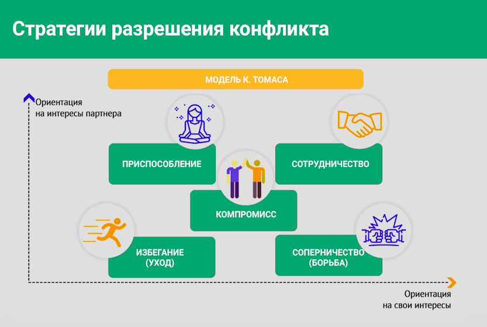

Стратегии разрешения конфликта.

Здравствуйте, с вами Юлия Огаркова-Дубинская, и сегодня мы поговорим о конкретных стратегиях разрешения конфликтов. За основу возьмем классическую модель управления конфликтами К. Томаса. Итак, Томас выделил пять основных способов урегулирования конфликтов.
Способ 1. Соперничество — заключается в навязывании другой стороне предпочтительного для себя решения.
Способ 2. Сотрудничество — позволяет найти такое решение, которое удовлетворяло бы обе стороны.
Способ 3. Компромисс — предполагает взаимные уступки в чем-то важном и принципиальном для каждой стороны. Хочу обратить ваше внимание на то, что речь идет именно о важных уступках — в этом особенность компромисса. Уступки в чем-то второстепенном могут быть и при сотрудничестве.
Способ 4. Приспособление — основывается на понижении своих стремлений и принятии позиции оппонента. Одна сторона отказывается от своих стремлений и полностью принимает позицию оппонента. Часто приспособление идет рука об руку с подавлением чувств, невозможностью их выразить, неприятием собственной здоровой агрессии.
Способ 5. Избегание — участник находится в ситуации конфликта, но без активных действий по его разрешению. Конфликт как будто ставится на паузу.
Эти пять моделей связаны с двумя характеристиками:
— ориентация на собственные интересы;
— ориентация на интересы партнера.
Какая стратегия оптимальна в большинстве случаев
Ответьте, пожалуйста, на вопрос, какая, на ваш взгляд, стратегия из этих пяти является оптимальной в большинстве случаев. И второй вопрос: какую из этих стратегий, на ваш взгляд, чаще всего люди используют. Обычно, когда я задаю эти вопросы, слышу ответ: оптимальная и часто используемая стратегия — это компромисс. Сейчас мы разберёмся с тем, как обстоят дела на самом деле.

На этом графике достаточно ярко показано, как выглядит модель Томаса графически. Итак, мы видим две оси. Вертикальная ось — это ориентация на интересы партнера. Горизонтальная ось — ориентация на собственные интересы.
Избегание — это минимум по обеим осям. Выбирая такую стратегию, мы минимально ориентируемся на свои интересы и также минимально на интересы партнера.
Приспособление — минимум по горизонтальной, но максимум по вертикальной. Здесь мы минимально ориентируемся на свои интересы и максимально на интересы партнера.
Соперничество — максимум по горизонтальной, минимум по вертикальной. Здесь мы максимально ориентируемся на собственные интересы, минимально на интересы партнера.
Компромисс — половинка по обеим осям. Здесь мы 50/50 ориентируемся на свои интересы и интересы партнера.
Сотрудничество — максимально по обеим осям. Здесь мы максимально ориентируемся на собственные интересы и максимально на интересы партнера.
Исходя из этого, какая стратегия является оптимальной? Это стратегия сотрудничества. При компромиссе, который мы ошибочно считаем оптимальным, оба участника должны отказаться от чего-то важного для себя. А при сотрудничестве все важное: и для себя, и для партнера мы готовы сохранить. На самом деле, эта стратегия несет в себе и максимальное удовлетворение участников, и, конечно же, максимальный результат. Да, это не всегда оказывается на 100% возможно, но в гораздо большем количестве ситуаций, чем мы предполагаем изначально.
Когда задают вопрос: «Как же привести к общему знаменателю то, что совсем не совпадает?», я привожу пример из математики. Смотрите, у нас есть две дроби и нам нужно привести их к общему знаменателю. Что мы делаем? Мы ищем общие делители и собираем общий для обеих чисел знаменатель. Но что делать, когда нет общих делителей? Когда в знаменателе стоят простые числа? Например, одна одиннадцатая и одна тринадцатая. Ничего общего, но общий знаменатель все равно возможен. Общий знаменатель — это когда мы принимаем все 100% одного числа и все 100% другого числа. И в данном случае это будет 11 х 13 = 143. И вот такой общий знаменатель, когда мы полностью включаем обе точки зрения, практически всегда возможен. Но как вы понимаете, в жизни это требует широты взглядов — такой общий знаменатель достаточно широк и велик. Но я думаю, что аналогия здесь понятна.
Итак, сотрудничество — это оптимальная в большинстве случаев стратегия разрешения конфликта. Какая же стратегия самая частая? Самая частая стратегия — это соперничество. Конфликт, по крайней мере на начальном этапе, связан с таким количеством эмоций и аффектов, что наши мыслительные способности снижаются. Когда мы действуем во власти аффекта, нам хочется борьбы, победы и полной капитуляции противника. И, конечно, мы выбираем стратегию соперничества. Однако, при достаточно большом опыте взаимодействия в конфликтах эта стратегия со временем уступает место другим.
Когда оптимальны другие стратегии
То, что мы сейчас разобрали, относится к общему варианту развития событий, когда сотрудничество действительно оптимально. Но давайте представим себе такую ситуацию: вы идете по улице, и к вам пристает выпивший агрессивный человек, ругается на вас, использует нецензурную лексику. О каком варианте сотрудничества здесь может идти речь? Ваши интересы здесь понятны — это сохранить собственное спокойствие и дойти туда, куда вы шли. Интересы вашего соперника в конфликте — скорее всего, инициировать драку. Если вы будете сотрудничать, стараясь удовлетворить оба варианта, то возникнет весьма странная ситуация. Поэтому в некоторых моментах и другие стратегии могут быть оптимальными. В данном случае это стратегия избегания.
Таким образом, в ситуациях, когда вы встречаетесь с аффективно насыщенной, нелогичной конфликтной ситуацией, и в ней принимают участие люди, с которыми вы вероятно никогда больше не встретитесь (то есть вам не нужно выстраивать длительные отношения), стратегия избегания подходит лучше всего.
Итак, мы разобрались, что сотрудничество оптимально почти всегда. Избегание хорошо, когда у нас есть разовые, непонятные пожары. Когда мы не можем никак повлиять на ситуацию, когда партнер нас провоцирует и у нас нет необходимости развивать дальнейшие отношения. Тут любая коммуникация приведет к эскалации конфликта, поэтому оптимален уход.
В ряде случаев будет приемлем компромисс. Дело в том, что действительно иногда бывает так, что в оптимальном варианте не получается совместить потребности обоих оппонентов — когда они взаимно противоположны. Например, вы сидите с коллегой в одном помещении: ей все время жарко, а вам — холодно. Здесь полное объединение интересов невозможно. Но возможен компромисс. Например, вы договариваетесь, как внутри помещения распределить места посадки, чтобы один сотрудник сидел ближе к окну, а другой — в другой части, загороженной офисной мебелью. Либо вы договариваетесь о том, когда будете открывать окно или включать кондиционер. То есть вы распределяете возможность удовлетворить свои потребности во времени. Полное удовлетворение потребности здесь невозможно. В таких ситуациях компромисс — это хорошее решение.
Приспособление логично и возможно в тех случаях, когда вы понимаете, что оппонент прав. На самом деле бывают такие ситуации, когда мы изначально руководствуемся ошибочной точкой зрения и в итоге понимаем, что оппонент прав. Предположим, вы обсуждаете какой-то проект. У вас одна точка зрения насчет его реализации, а у партнера — другая, но он смог вас убедить и вы понимаете, что его точка зрения более оправдана и приведет к повышению эффективности. Тогда бессмысленно соперничать. Здесь оптимально применить стратегию приспособления.
И, наконец, соперничество — это наименее эффективный во всех смыслах способ взаимодействия в конфликте. В соперничестве, пожалуй, может быть только один плюс для некоторых участников. Иногда этот способ позволяет тем, у кого есть трудности с выражением собственных эмоций, наконец преодолеть их — ситуация как будто этому способствует. Но это единственный плюс, который можно найти в такой стратегии.
Методика «Оценки способов реагирования в конфликте» К. Томаса
Сотрудничество — оптимально почти всегда.
Компромисс — вполне приемлем в ряде случаев.
Избегание (уход) — рекомендовано в случае спровоцированных партнером «пожаров».
Приспособление — возможно в тех случаях, когда оппонент действительно прав.
Соперничество — наименее эффективный, но наиболее часто используемый способ поведения в конфликтах.
Уважаемые слушатели, я надеюсь, что за время нашего курса вам удалось понять, что конфликт и агрессия — это не всегда плохо. У конфликта конструктивных сторон не меньше, чем деструктивных. Его задача — выявить то, что вызывает сложности, вывести на поверхность то, что вызывает брожение внутри. Так же и негативные эмоции как способ проявления агрессии — это не более чем сигнал, и наша задача — не игнорировать сигналы нашей психики, а использовать их по делу. Все то, что продуцирует наша психика, никогда не бывает просто так.
Главное, что вам нужно вынесли из этого курса — это то, что мы не можем властвовать над тем, будет конфликт или не будет, появится у нас какая-то эмоция или не появится, но наша ответственность в том, чтобы появившимся конфликтом или эмоцией мы распорядились максимально конструктивно. Чтобы научиться их канализировать таким образом, чтобы это работало на пользу вашим потребностям и потребностям вашего партнера и, конечно, на интересы общего дела. Конструктивных вам конфликтов, которые будут способствовать движению, развитию вашей жизни и мудрых стратегий их разрешения. С вами была Юлия Огаркова-Дубинская, всего доброго.
Дополнительные материалы:
— Обзор книги «Переговоры без поражения. Гарвардский метод», Роджер Фишер, Уильям Юри, Брюс Патон